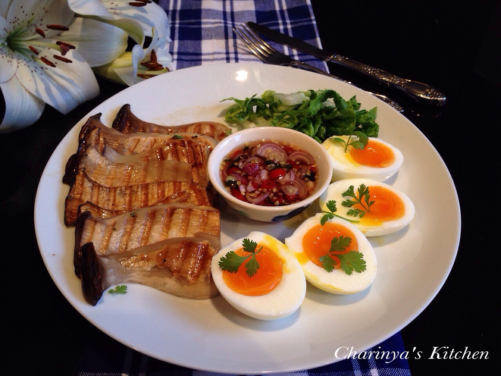
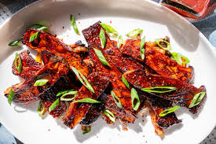
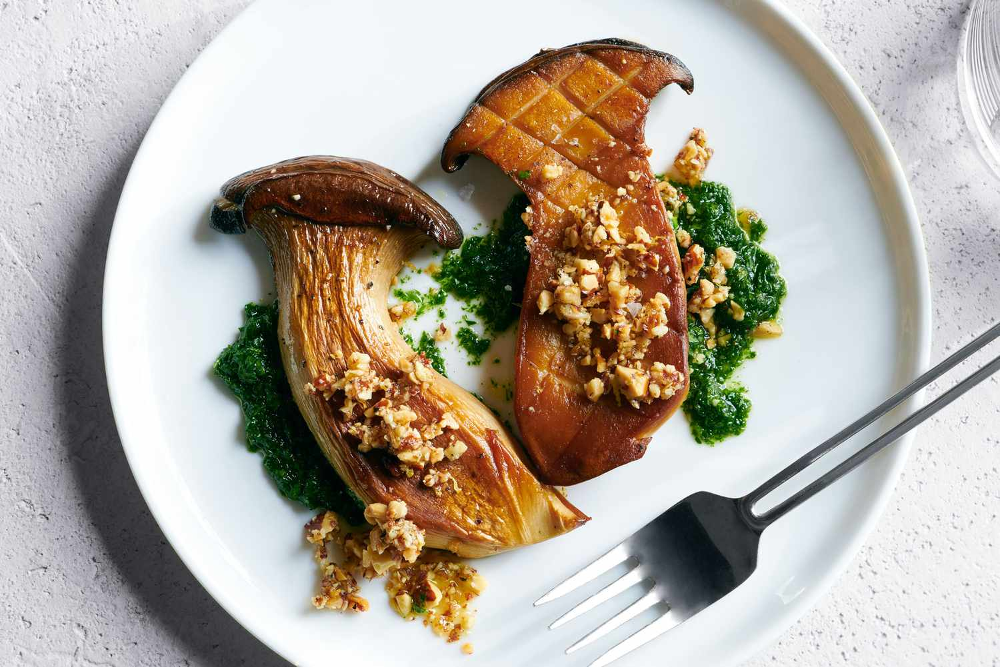

NaI KoDaI
Today's Special Recipe
Chef Damu ( Accord )
Posted on : 21st Aug 24



King Oyster Mushroom Bulgogi
Ingredients:
- 1 lb King Oyster mushrooms, sliced into thin strips
- 2 tbsp soy sauce
- 2 tbsp gochujang (Korean red chili paste)
- 1 tbsp rice vinegar
- 1 tbsp honey or sugar
- 3 cloves garlic, minced
- 1-inch piece ginger, minced
- 2 green onions, chopped
Instructions:
- Prepare the Marinade:
- In a bowl, mix together the soy sauce, gochujang, rice vinegar, honey (or sugar), and sesame oil until well combined.
- Marinate the Mushrooms:
- Add the sliced King Oyster mushrooms to the marinade. Toss to coat evenly. Let it marinate for at least 30 minutes, or up to 2 hours for a more intense flavor.
- Cook the Mushrooms:
- Heat vegetable oil in a large skillet or frying pan over medium-high heat. Add the minced garlic and ginger, and sauté for about 1 minute until fragrant.
- Add the marinated mushrooms to the skillet, spreading them out in an even layer.
- Finish and Serve:
- Sprinkle the cooked mushrooms with sesame seeds and chopped green onions. Serve hot over steamed rice or with lettuce leaves for wrapping.
Enjoy your delicious and flavorful King Oyster Mushroom Bulgogi!

FOLLOW US ON THE WEB